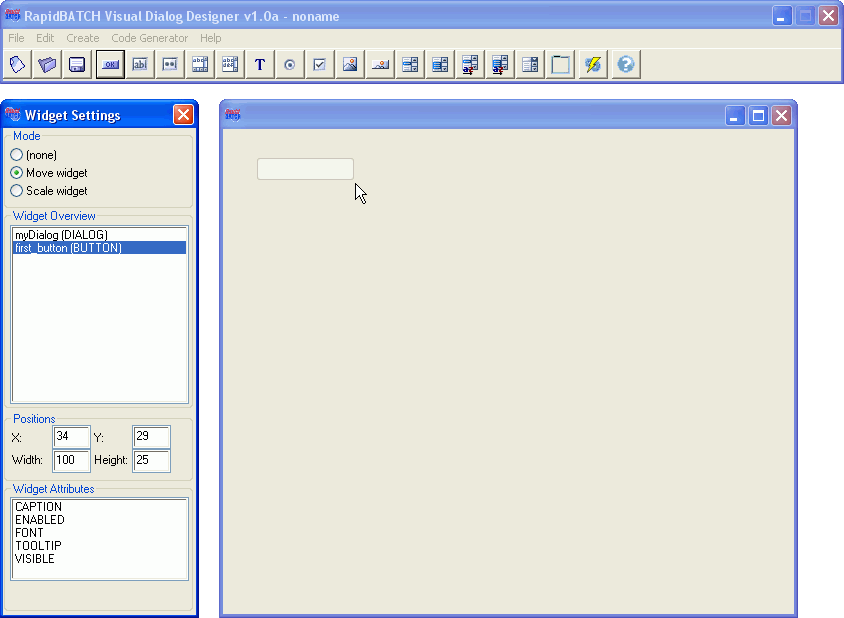
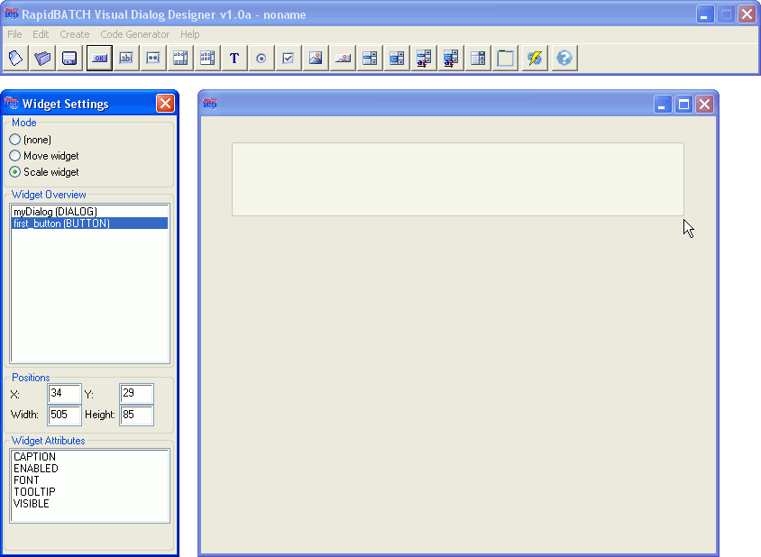
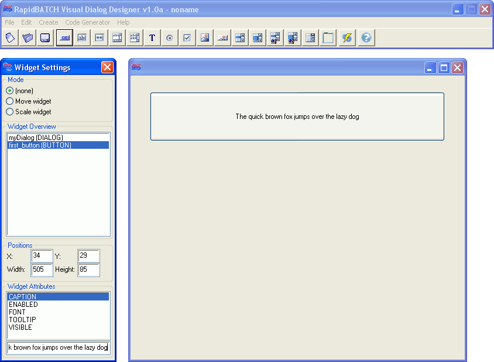

First steps
This chapter will demonstrate you, how a simple dialog window is created and designed, using the Visual Dialog Designer.
When Dialog Designer is started, it first asks for a widget-name for the dialog basis window. When this dialog is confirmed with the desired (or even the suggested) value, create a new button-widget by selecting the corresponding icon from the toolbar or over the Create-Menu. Another input-box appears, where you need to enter the desired name for the new button widget. "MyWidget1" is suggested automatically by the program.
Entering the widget-name for new button-typed widget to be created

Moving and placing the button on the designer-window using the mouse
The widget can also be placed and adjusted by entering the desired screen coordinates, in pixels, into the corresponding input-fields on the widget-editor.
As easy as moving and placing a widget, it can also be scaled with the mouse. To do this, select the "Scale widget"-mode from the mode-area. Again, the mouse cursor is set to the lower-right corner of the widget. Now, you can scale the widget to any desired size on the designer's window. You apply your desired size and leave the mode again by a single left-click with the mouse.
Scaling the button on the designer-window using the mouse
At least, let's give the button a caption. Select the CAPTION-attribute from the attribute-list below the coordinates-information area. An input-field appears and is automatically focussed. Now you can enter any desired caption value. You can see: The caption is showed character-by-character on-line on the button when you enter it.
Setting the button's caption
That's it! You see: Creating and designing dialogs using the Visual Dialog Designer is only a piece of cake.
Copyright © 2000-2006 by J.M.K S.F. Software Technologies, Jan Max Meyer
All rights reserved.